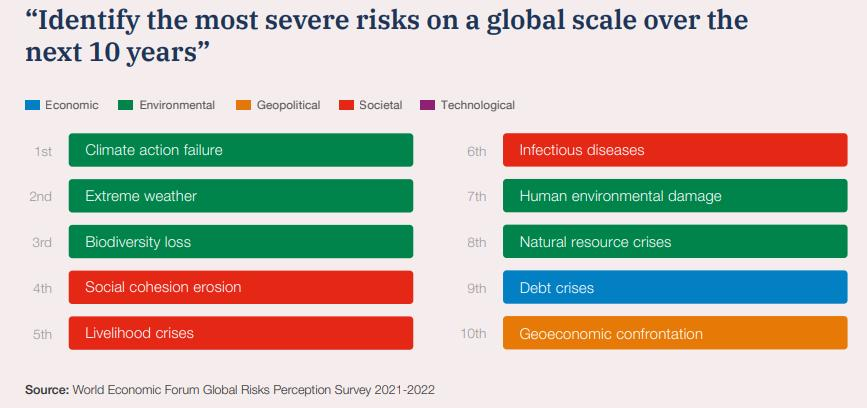

依據世界經濟論壇《2022全球風險報告》調查，未來十年全球前十大風險中，生物多樣性喪失（biodiversity loss）從2021年的第五名，提升到第三名。而前兩名分別是：氣候行動失敗（Climate action failure）及極端氣候（Extreme weather），除了本就受高度關注的氣候議題外，生態衝擊所產生的風險正步步逼近，保護生物多樣性成為了一個全球共同的議題。
|  |
那什麼是生物多樣性呢？生物多樣性是地球生命系統的重要組成部分，包括物種多樣性、基因多樣性和生態系統多樣性，涵蓋了從微小的細菌到壯觀的野生動物、植物的所有生物物種，它支撐著人類的生存、發展和繁榮。然而氣候變化、棲息地破壞、過度捕撈和非法狩獵等多種因素，全球的生物多樣性正面臨著嚴重的威脅和危機。因此，保護生物多樣性已成為永持續發展目標（SDGs）的重要議題之一。
公司自2020年開始，積極響應聯合國30(海洋)x30(陸地)計劃：2030年前保護至少30%海洋和陸地，減少氣候變遷的影響；於今年更訂定生物多樣性暨不毀林政策，宣告保育生物多樣性之承諾。近幾年除舉辦淨灘活動外，亦與荒野保護協會合作，贊助溼地保育計畫及推廣溼地環境教育，今年延續與協會之合作，保育台灣原生蕨類，易危物種(Vulnerable species , VU)鹵蕨，舉辦「鹵蕨復育行動」之一系列活動，包含鹵蕨相關知識線上課程、社六溼地鹵蕨復育工作、環境教育活動等，期待同仁能踴躍參與，讓鹵蕨能夠重回淡水河口，穩定自然生長繁衍，再現美麗樣貌，恢復完整的生態系統。
同仁除了響應公司各項活動外，大家亦可從日常的飲食、消費及生活習慣做改變，以減少及避免更多野生動植物棲地因人類的消費需求遭受破壞，例如：減少資源的浪費，謹慎選擇產地來源、製造過程皆為友善環境的商品與愛護周遭的自然環境等。
生物多樣性是我們珍貴的資產，每一種生物都有其獨特的生存價值和美麗之處。我們每一個人都有責任保護生物多樣性，守護這個美麗的地球，讓生物多樣性得以持續繁衍和生存、也為未來世代留下一個充滿生機和美好的世界。
-----------------------------------------------------------------------------------------------------------------------------------------
參考資料 :